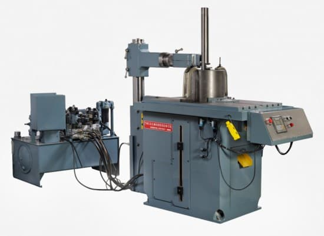
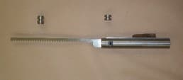
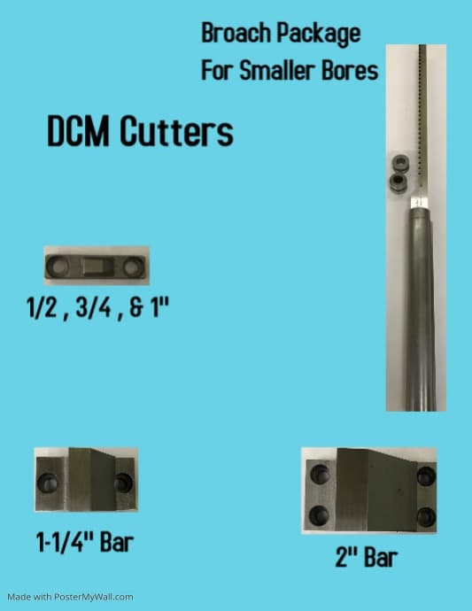

What we do the best
The 1¼" Morrison Keyseater
The Heavy Duty Single Tooth Cutter
Features:
- Variable Speed
- Quick Setup
- Automatic Feed
- Automatic Stop
- Cuts Keywas 1⁄16" to 1½"
For more information, see The Parts List and Service Manual.
For a video demostration, see YouTube: Demonstration of the D.C. Morrison 1¼" Keyseater.
For pricing, see The 1.25 inch Keyseater & Cutter Price List. or call us at call us at 888-246-6365.


The 3" Morrison Keyseater
The newly redesigned Morrison 3" Keyseater has been physically modified and is more rigid than ever! The back support bracket is twice the length of the older models, enabling more accurate keyways in various material.
The overhead support is now easily raised and lowered by hydraulics with the push of a button. The programming is now extremely user friendly with the use of a programmable logic controller and human machine interface. (HMI)
The Morrison Keyseater does not require to be positoned in a pit, and needs no bushings to center the keyways. Cuts from ⅛" to 3" wide and 14" high.
For a video demostration, see YouTube: Demonstration of the D.C. Morrison 3" Keyseater.
For pricing, see The 3 inch Keyseater & Cutter Price List. or call us at 888-246-6365.
Broach Kits
The Morrison Keyseather was built on the princimle of cost-effective keyways, using our single tooth cutter design. However, for smaller bores (⅝ to approx. 1") a conventional broach may be an option to consider.
Finally!
One machine can do both! Our latest solution to this problem is an optional "Broach Kit" which includes upper and lower guide rollers, broach holder, and broach. This holder attaches like the conventional cutter bar in minutes and allows the Morrison Keyseater to use a conventional-type, multiple-tooth broach.
For pricing, call us at 888-246-6365.

